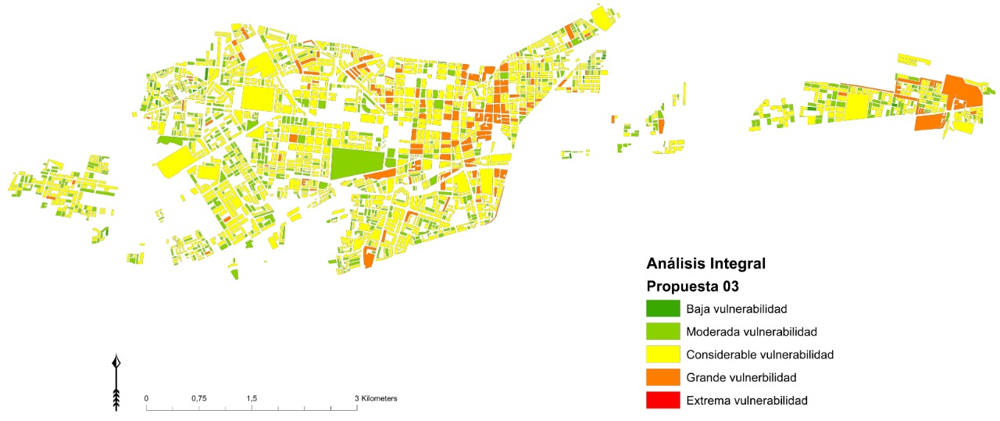

Esta investigación puede ser usada desde el sector público / privado como herramienta estratégica para mejorar su eficiencia. En el ámbito público, las organizaciones gubernamentales pueden hacer uso de esta propuesta metodológica para identificar cuáles son las áreas más vulnerables de una ciudad. De esta forma, se podrá asignar recursos, eficientemente, para salvaguardar la integridad de las personas más vulnerables cuando un terremoto suceda. De la misma forma, el sector privado, en especial las compañías aseguradoras, pueden sacar provecho de este proyecto, si la utilizan como herramienta para identificar potenciales clientes, ya que tendrían identificadas a las personas residentes en sectores vulnerables. Como beneficio adicional, pueden implantar tarifas especiales para las pólizas de seguro acorde al nivel de vulnerabilidad asociado.
